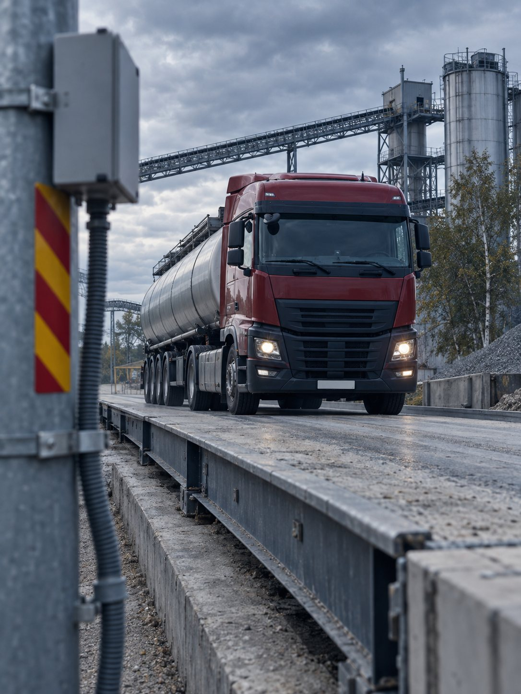
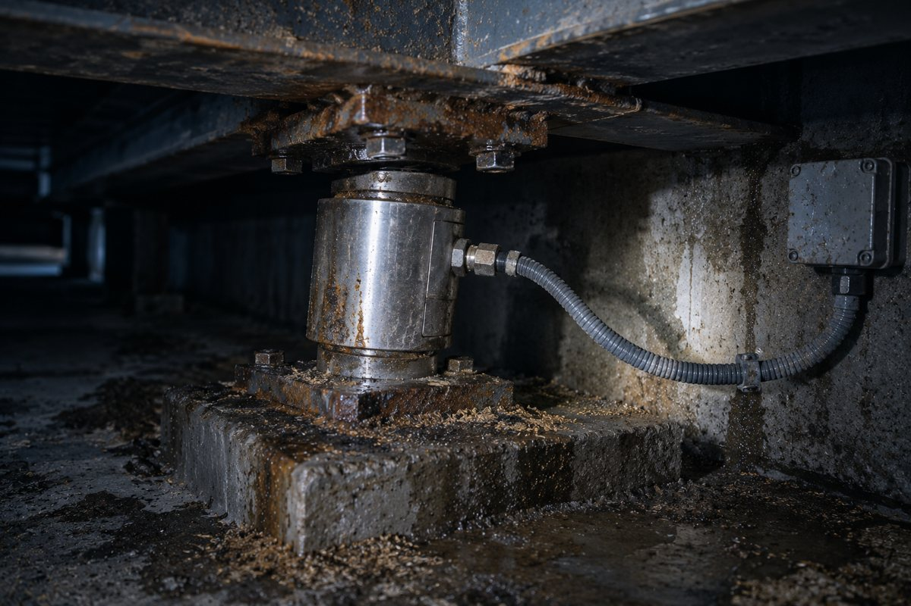
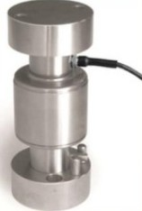
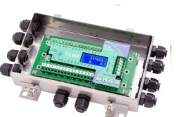
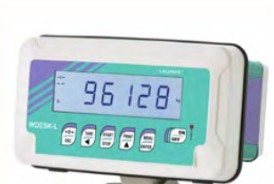
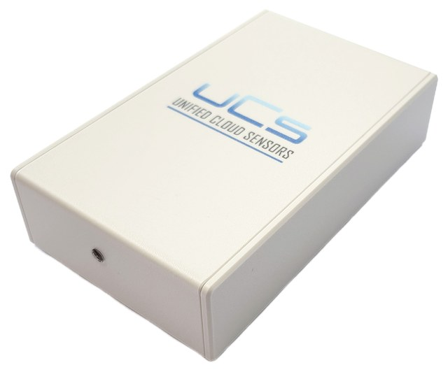
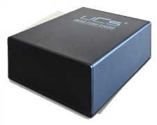
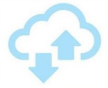
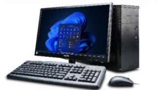
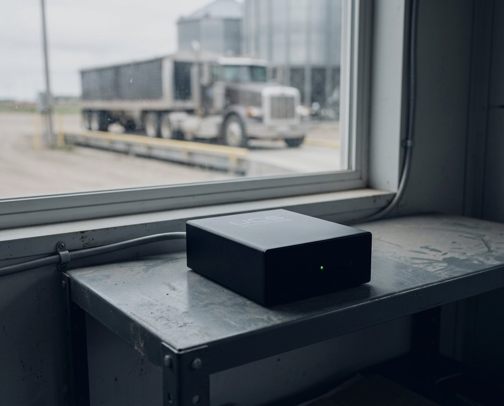

 SensWEIGHT® Bridge
SensWEIGHT® BridgeYour weighbridge is your cash register. Is it leaking profit?
At 10,000 tonnes per month, even 1% drift means 100 tonnes unbilled.
PATENTED TECHNOLOGY · EP 4 524 526The error you can't see on your indicator
WITHOUT SensWEIGHT® Bridge
Indicator shows 42,410 kg. Looks right — it isn’t.
One load cell is off by 44.6% — the operator never sees it.
Calibration passed — the drift happens between checks.
WITH SensWEIGHT® Bridge
Every load cell checked on every weighing.
A faulty cell is flagged the moment it drifts.
Verified continuously, not once a year.
A logistics site discovered LC8 was lying for 5 months
Busy truck scale at an agricultural depot. Calibration passed. No complaints.
18 × 3 mLC8 under-reported its load. The indicator total masked it across the other cells.
44.6%Farmers were credited for less grain than they delivered — for 5 months.
€23,400LC8 replaced, guidance markers repositioned. Revenue now tracked live: ≈ €42,400 in 6 active days.
€380
Works with what you already have







Both deliver: per-cell health data, transaction logging, automated alerts (SMS/email), REST API. Whether your scale is 2 years old or 20 — it works.
Your scale is a cash register. Here's the receipt.

Catch what a camera can't
01 Partial positioning
Driver stops with rear axle off scale edge, underweighing by 1–3 tonnes per pass.
Per-cell load pattern reveals positioning anomalies
02 Software manipulation
Indicator calibration tampered with. Scale reads correctly for test weights, drifts under real loads.
Immutable audit trails prevent data tampering
03 Repeat weighing fraud
Same truck crosses twice with different IDs. Credits duplicate loads.
Transaction correlation flags repeat patterns
A CCTV camera shows you the truck. SensWEIGHT® Bridge shows you whether the truck is on the scale correctly.
51 days to full payback
Based on verified site data. Your figures depend on your own traffic and material value.
Assumptions
- Weighbridge traffic
- 10,000 t/month
- Material value
- €50/t
- Risk basis
- LC failures + fraud + inventory leakage
Test SensWEIGHT® on your busiest scale